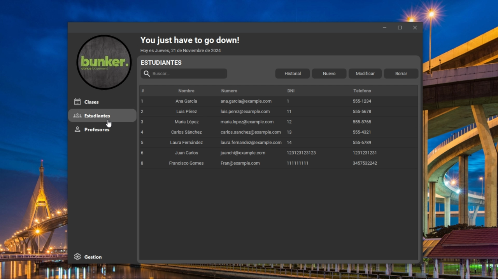

Student Administration System for Dance Studies
administration system designed to manage students, classes and teachers in a dance studio

Descripcion
This project is a desktop application developed in Java Swing with PostgreSQL, designed for the management of students, classes, class packs and teachers in a dance studio. Includes key features such as autocomplete, visual itineraries and financial management.
- Main Features
- Student management:
- Registration, editing and viewing of students with associated packs.
- Teacher management:
- Registration, editing and assignment to classes.
- Classes and schedules:
- Planning and viewing classes in a visual itinerary.
- Financial management:
- Registration of student payments and calculation of teacher salaries.
- Autocomplete functionality:
- Dynamic search for names and IDs to streamline processes.
- Technologies used
- Java Swing:
- For the graphical user interface.
- PostgreSQL:
- Relational database for data storage.
- FlatLaf:
- Modern user interface customization.